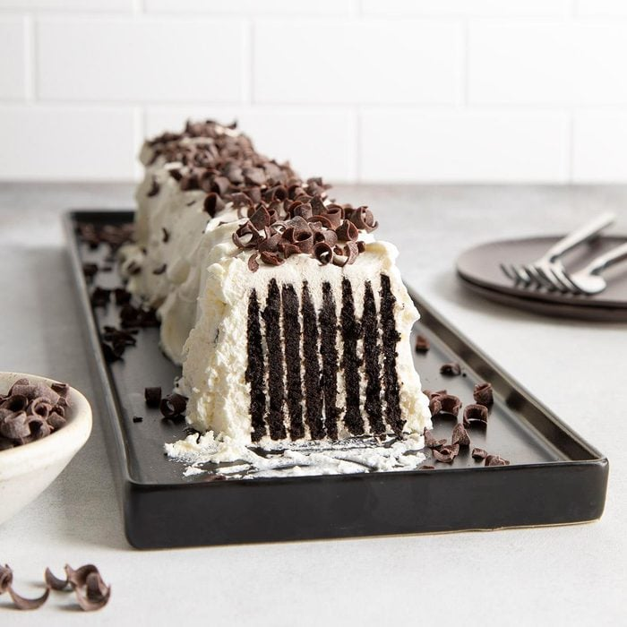

ICEBOX CAKE

Description
Because icebox cakes are a no-bake dessert, they are usually quick and easy to
make. And, as a bonus, they don not heat up the kitchen in the summer. Simply
whip cream and spread onto wafer cookies. The assembly is quick, but plan
ahead, as icebox cakes need about four to six hours to set in the fridge.
Ingredients
- 2 cups heavy whipped cream
- 2 tablespoons confectioners sugar
- 1 teaspoon vanilla extract
- 40 thin chocolate wafers
- Chocolate curls
Directions
- In a large bowl, beat cream until soft peaks form. Add sugar and vanilla; beat until stiff.
- Spread heaping teaspoons on the cookies, make 6 stacks of cookies.
- Turn stacks on edge and place on a serving platter, forming a 14-in.-long cake.
- Frost top and sides with remaining whipped cream. If desired, garnish with chocolate
curls. Refrigerate before serving, 4-6 hours.
- Your Dessert is ready!